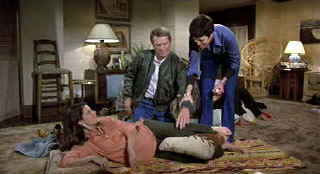

| Hunter,The/C+,B+ |
| Paramount//1980/97/ANA 1.85 |
What's the cool factor worth? Steve McQueen is cool as Ralph
"Papa" Thorson, a modern day bounty hunter with a heart. It's Steve McQueen's last movie.
Is that worth something? It is if you like McQueen and who did not like McQueen.
That said, The Hunter is only mildly entertaining. The script is
little more than a half dozen of Thorson's captures strung together like pearls on the strand of
Thorson's domestic life combined with a death threat from a former detainee. The action is
variable, depending on McQueen's charisma to carry the day. A running joke about Thorson's terrible
driving keeps cropping up like a line-up of left lane Sunday drivers. There's a generous side to Thorson that's merely touched
upon when he helps a young black man he picks up get off through a promise of a job to the judge.
Thorson's name carries lots of weight in this flick. The script is based on the real life adventures of Thorson. You've gotta
believe his life was lots more interesting the workmanlike script.
 |
| Papa don't do no Lamaze. ©Paramount |
Source material for The Hunter is quite good. There a few minor
specs of dirt, but the transfer is very sharp. Details are easily discernible. McQueen's cool look
is delivered with maximum cool, but his drawn face reveals his age more than you'd like. Color saturation is fine and black level
consistently good. Shadow detail is evenly balanced. Skin tones have a nice range. The mono
soundtrack is adequate.
|
|
|
|

Selections from the Feature Archive include articles on
Akira Kurosawa, Blonde Bimbos,
Frank
Darabont, Steven Culp,
John
Herzfeld or Vietnam: The
Hollywood Pariah, and many more....
Robert A. Harris
Tilting at Hollywood
He's part of the dynamic duo that restored Lawrence of Arabia, Spartacus, My Fair Lady and Vertigo.
Harris rides a white horse into the for the cause of preserving our film legacy. Click on the image
to read more.

L.A. Confidential (SE) /A,A

Unquestionably the best picture of 1997. Top-notch entertainment with superb
acting.

 Have you visited Home Theater
Talk lately? One of the friendliest places on the Net for Home Theater and DVD discussion, you
can get help for installation problems or simply share your opinions with other Vidiots. Have you visited Home Theater
Talk lately? One of the friendliest places on the Net for Home Theater and DVD discussion, you
can get help for installation problems or simply share your opinions with other Vidiots.

ISF Monitor Calibrations in the
Tristate New York area. Lots of hardware info and frequent hardware peaks from video expert Kevin
Miller.They may be judgmental, but that's the point, isn't it. Lots of DVD reviews plus news and
more.

Specializing in DVD reviews, DVD Authority boasts almost 400 reviews in an easy to use, elegant,
interface.
|